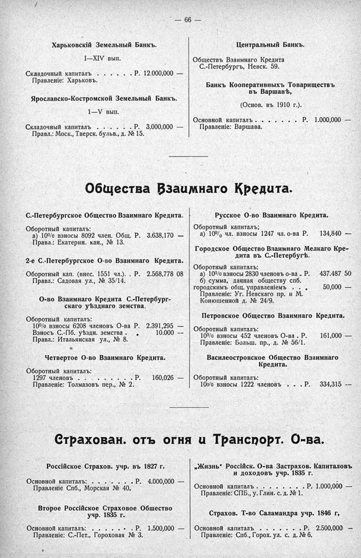

Лист источника 112
Скан

Распознанный текст
— 66 —
Харьковскій Земельный Банкъ.
I—XIV вып.
Складочный капиталъ . . . . . Р. 12.000,000 —
Правленіе: Харьковъ.
Ярославско-Костромской Земельный Банкъ.
1—V вып.
Складочный капиталъ . . . . . Р. 3.000,000 —
Правл.: Моск., Тверск. бульв., д. № 15.
Центральный Банкъ.
Обществъ Взаимнаго Кредита
С.-Петербургъ, Невск. 59.
Банкъ Кооперативныхъ Товариществъ
въ Варшавѣ,
(Основ. въ 1910 г.).
Основной капиталъ . . . . . . . Р. 1.000,000 —
Правленіе: Варшава.
Общества Взаимнаго Кредита.
С.-Петербургское Общество Взаимнаго Кредита.
Оборотный капиталъ:
а) 10% взносы 8092 член. Общ. Р. 3.638,170 —
Правл.: Екатерин. кан., № 13.
2-е С.-Петербургское О-во Взаимнаго Кредита.
Оборотный кап. (внес. 1551 чл.) . . Р. 2.568,778 08
Правл.: Садовая ул., № 35/14.
О-во Взаимнаго Кредита С.-Петербург-
скаго уѣзднаго земства.
Оборотный капиталъ:
10% взносы 6208 членовъ О-ва Р. 2.391,295 —
Взносъ С.-Пб. уѣздн. земства . „ 10.000 —
Правл.: Итальянская ул., № 8.
Четвертое О-во Взаимнаго Кредита.
Оборотный капиталъ:
1297 членовъ . . . . . . . . Р. 160,026 —
Правленіе: Толмазовъ пер., № 2.
Русское О-во Взаимнаго Кредита.
Оборотный капиталъ;
а) 10% чл. взносы 1247 чл. о-ва Р. 134,840 —
Городское Общество Взаимнаго Мелкаго Кре-
дита въ С.-Петербургѣ.
Оборотный капиталъ:
а) 10% взносы 2830 членовъ о-ва . Р. 437.487 50
б) сумма, данная управленіемъ
городскимъ общ. управленіемъ . . „ 50,000 —
Правленіе: Уг. Невскаго пр. и М.
Конюшенной д. № 24/9.
Петровское Общество Взаимнаго Кредита.
Оборотный капиталъ:
10% взносы 452 членовъ О-ва . Р. 161,000 —
Правленіе: Больш. пр., д. № 56/1.
Василеостровское Общество Взаимнаго
Кредита.
Оборотный капиталъ:
100/0 взносы 1222 членовъ . . . Р. 334,315 --
Страхован. отъ огня и Транспорт. О-ва.
Россійское Страхов. учр. въ 1827 г.
Основной капиталъ: . . . . . . . Р. 4.000,000 —
Правленіе Спб., Морская № 40.
Второе Россійское Страховое Общество
учр. 1835 г.
Основной капиталъ: . . . . . . Р. 1.500,000 —
Правленіе: С.-Пет., Гороховая № 3.
„Жизнь“ Россійск. О-ва Застрахов. Капиталовъ
и доходовъ учр. 1835 г.
Основной капиталъ . . . . . . . . Р. 1.000,000 —
Правленіе: СПБ., у. Глин. с. д. № 1.
Страхов. Т-во Саламандра учр. 1846 г,
Основной капиталъ . . . . . . . . Р. 2.500,000 —
Правленіе: Спб., Горох. ул. с. д. № 6.